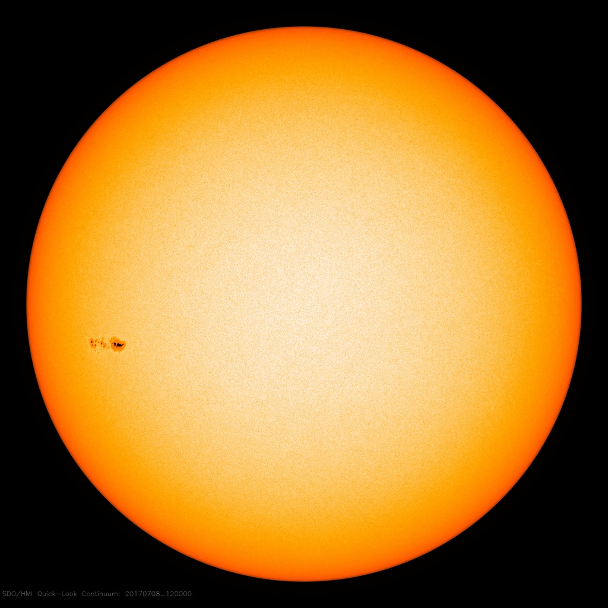

OBSERVE. EXPERIMENT. EXPLAIN.
태양계, 직접 탐구해 보기
주제별 50분 수업 세트: 교사용 지도안 · 학생 활동지 · 실제 자료 분석 도구
수업에서 같이 활용하기
수업 공유실 열기 ↗Codex 따라 하기 · 주제별 실습 순서 · 실제 관측 CSV · 복사용 요청문
탐구 순서
예측하기 → 조건 바꾸기 → 측정값 기록 → 그래프 해석 → 근거를 들어 설명하기
자료 출처와 모형의 가정은 각 활동에 표시됩니다. 교육과정 탭에서 성취기준과 평가 예시를 확인할 수 있습니다. 수업 시간은 제안입니다.
LESSON 01 / SOLAR ROTATION
태양흑점 분석 활동
같은 흑점을 5개 날짜에서 추적하고, 경도–시간 그래프로 자전주기를 추정하세요.
NASA 관측은 실제 영상, 자전 시뮬레이션은 합성 자료입니다. 탐구 가이드에 따라 측정하고 결과를 CSV로 저장하세요.
분석 도구 크게 열기탐구 질문
- 같은 흑점을 어떻게 구분했나요? 식별이 바뀌면 어떤 영향이 있나요?
- 원반 가장자리의 점을 제외하기 전후에 자전주기가 어떻게 달라지나요?
- 관측값과 차등 자전 모형을 비교하고 차이의 원인을 설명하세요.
결과로 제출할 것
측정점이 표시된 태양 영상, 경도–시간 그래프, 회합·항성 자전주기, 오차 원인 두 가지.
NASA/SDO HMI, 2017.07.05–07.14. JPG 교육용 측정이며 정밀 태양력·연구용 WCS 분석을 대체하지 않습니다.
LESSON 04 / KEPLER'S LAWS
행성 궤도 분석 활동
JPL 공개 행성 자료의 T²–a³ 관계와, 물리 모형의 같은 시간 면적을 비교하세요.
LESSON 02 / ASTEROID PHOTOMETRY
소행성 밝기 분석 활동
실제 팔라스 측광으로 세 주기 후보를 비교하세요. 3D 모형 맞추기와 별도 소행성 FITS 측광은 심화 활동입니다.
LESSON 03 / OBSERVED SOLAR SPECTRUM
태양 스펙트럼 분석 활동
관측 아틀라스의 흡수선에서 파장을 읽고, 나트륨 이중선·수소·칼슘 선을 비교하세요.
CURRICULUM / TEACHING GUIDE
교육과정에서 실습 활동으로
2022 개정 과학과 교육과정(교육부 고시 제2022-33호, 별책 9)을 기준으로 연결했습니다. 대학 태양계천문학 수업에서 예비 교사의 탐구·수업 설계에 활용할 수 있습니다. 특정 교과서 단원 배열을 재현한 사이트는 아닙니다.
태양흑점과 자기장 관측
[12행우02-01]
태양 광구·대기 현상과 여러 파장의 관측 자료를 비교·분석하는 성취기준.
원문 탐구 활동에 흑점 이동 자료로 자전주기 구하기가 제시됩니다. 해설과 적용 고려 사항에 차등 자전, 위도별 주기 계산, 스프레드시트·파이썬 활용이 포함됩니다.
- 활동: 동일 흑점 경도 변화의 회귀 분석. 별도 HMI FITS에서 헤더·자기장 부호·픽셀값 읽기.
- 평가: 대상 식별, 좌표 보정·오차, 회합·항성 주기 구분, 강도와 자기장 관측량의 구분.
- 자료: 2017년 흑점 JPG와 2011년 자기장 FITS는 다른 날짜·관측량입니다.
- 기초 연결: [9과07-02] 태양의 현상과 활동.
케플러의 세 가지 법칙
[12행우01-03]
태양의 중력과 케플러 법칙으로 태양계 구성 천체의 운동을 설명하는 성취기준.
장반경·이심률을 독립적으로 조절해 각 법칙의 물리적 의미를 확인합니다. 교육과정은 케플러 법칙으로 천체 데이터를 해석하는 탐구와 수행평가를 제안합니다.
- 활동: 초점 찾기, 같은 시간의 면적 비교, T²–a³ 기록.
- 평가: 이심률·주기 변화 구분, 변인 통제, 중심 질량 조건 명시.
소천체의 빛·모양·운동
[12행우01-04] 행성·소천체 구분 및 탐사 자료로 특징 추론.
[12행우01-02] 지구 접근 천체 등 우주 위험 감시의 중요성.
[12행우01-03] 소천체에 적용되는 케플러 법칙.
지상 관측에서 ‘자료 → 특징 추론 → 모형 비교 → 근거와 한계 설명’을 연습합니다. FITS 측광 대상은 138205 (2000 EZ148), 3D 비교 대상은 팔라스입니다. 지상 관측과 탐사선 관측은 구분합니다.
- 활동: FITS 헤더·픽셀 읽기, 이동 천체·비교별의 원형 측광, 위상 겹치기, 축비·시선을 바꾼 3D 타원체 적합.
- 평가: 대상 식별과 배경 제거 근거, 자전·공전 구분, 후보 주기의 잔차, 서로 다른 모양이 비슷한 광도곡선을 만드는 이유.
- 전공 확장: 자전주기 적합·3D 모형 비교·목성 공명. 해당 성취기준에 3D 역산이 필수로 제시된 것은 아닙니다.
- 기초 연결: [9과07-01] 태양계 천체와 자료 분석.
스펙트럼과 천체의 구성 물질
[10통과1-02-01]
천체의 빛의 스펙트럼으로 구성 물질을 추론하는 성취기준.
실제 태양 아틀라스의 흡수선과 기준 파장을 비교해 원소를 추론합니다. 합성 모형으로 분해능·온도·도플러 이동의 효과를 함께 탐구합니다.
- 활동: Na D 이중선 파장 측정, H·Ca 선 비교, 경계를 바꿔 흡수 구간의 등가폭 측정.
- 평가: 파장 측정 근거, 연속광·선 혼합의 영향, 선 세기를 함량과 단순 동일시하지 않기.
- 자료: BASS2000 가시광 아틀라스 원형식은 ASCII입니다. 별도 Birr FITS는 태양 전파의 시간–주파수 자료입니다.
- 전공 확장: 등가폭 적분과 태양 전파 관측. 전파 동적 스펙트럼은 가시광 원소 식별 활동과 구분합니다.
수업 운영 예시 · 2차시
- 1차시: 5분 개념·질문, 20분 모둠별 조건 변경·기록, 15분 그래프와 근거 정리.
- 2차시: 모둠별 결과·모형 가정·오차를 토론하고, 중등 수업 활동으로 재설계.
제안하는 운영 예시입니다. 목표와 학생 수준에 맞춰 선택하세요.
근거 자료와 출처
교육부 · 2022 개정 과학과 교육과정 원문NASA SDO · 태양 영상DAMIT · 팔라스 실제 광도곡선The Schools’ Observatory · 소행성 FITS 원본 6장SunPy sample data · HMI 자기장·태양 전파 FITSDAMIT · 팔라스 문헌 3D 형상과 자전 모형BASS2000 · 실제 태양 스펙트럼 아틀라스NASA JPL · 소천체 궤도 요소NASA JPL · 주 소행성대와 커크우드 간극NIST · 원자 스펙트럼 기준선JPL CNEOS · 지구 접근 천체 궤도연계 판단과 활동 설계는 이 사이트에서 구성했습니다. 교육부·NASA의 공식 교육 서비스가 아닙니다.